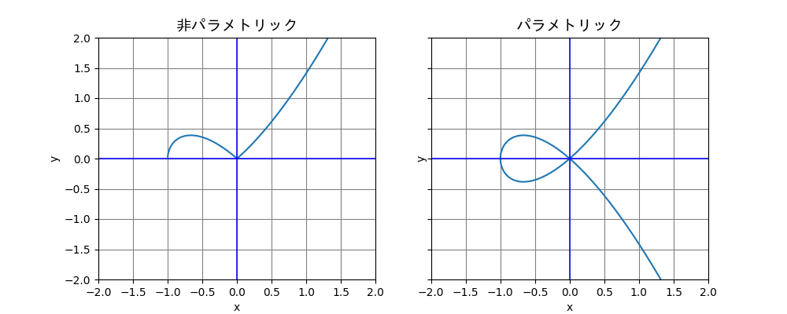
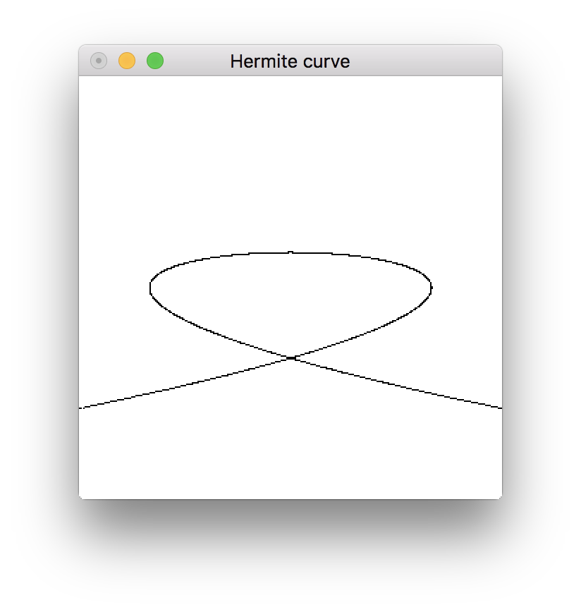

典型的なパラメトリック曲線の一種である, エルミート曲線についてのメモ.
パラメトリック曲線
そもそもパラメトリック曲線とは, 任意のパラメータから各々の座標を陽関数形式で表現できる曲線のことをいう. このとき定義できる関数 \(f\) がパラメータ \(t\)1 の多項式である場合, それを多項式曲線といい, 有理式である場合, それを有理曲線という. 例えば, 直線の方程式 \(y = m(x-a)+b\) は,
とパラメタライズできる. この方程式では, パラメタライズせずとも, \(x\) に 1 つの実数を代入すれば, 必ず \(y\) が求まる(逆も言える)ことは明らかである. 次に, 3 次曲線 \(y^{2} = x^{3} + x^{2} \) について考える. \(x\) に 1 つの実数を代入すると, \(y\) は,
- \(x^{3} + x^{2} \gt 0\) のとき \(\pm{\sqrt{x^{3} + x^{2}}}\),
- \(x^{3} + x^{2} = 0\) のとき \(0\),
- \(x^{3} + x^{2} \lt 0\) のとき複素数
となり, \(x\) の値によっては, グラフが存在しない. これを
とパラメタライズすることで, 任意の実数 \(t\) に対するグラフ上の一点を定めることができる2.

エルミート曲線
エルミート曲線は, 始点\((x_{0}, y_{0})\)とその速度ベクトル\((v_{0}, w_{0})\), 終点\((x_{1}, y_{1})\)とその速度ベクトル\((v_{1}, w_{1})\) を与えたときに, 始点と終点の間をつなぐ 3 次パラメトリック曲線である. 3 次パラメトリック曲線と言うからには, これを一般の 3 次多項式で表現できるはずである.\[ f(t) = At^{3} + Bt^{2} + Ct + D \] パラメトリック曲線は \(x\) と \(y\) をそれぞれ別々に扱えるので, まず \(x\) について考える. \[x(t) = At^{3} + Bt^{2} + Ct + D \tag{1}\] 4 つの係数, \(A, B, C, D\) が得られれば, 任意の \(t\) に対するエルミート曲線の \(x\) が得られるはずである. まず, 始点の座標を求める. \(t = 0\) のときを始点, \(t = 1\) のときを終点としたとき, \(t = 0\) のときに始点の座標, \(t = 1\) のときに終点の座標が得られることは明らかなので, \(t\) に \(0\), および \(t\) に \(1\) を代入して次の二式が得られる.\[x(0) = D = x_{0} \tag{2}\] \[x(1) = A + B + C + D = x_{1} \tag{3}\] ここで, ある地点 \(t\) での曲線の傾きを求めるために, 一階微分した次の式を得る. \[\displaystyle \dfrac{d}{dt}x(t)=3At^{2} + 2Bt + C \tag{4}\] 始点(\(0\))と終点(\(1\))をそれぞれ式 \((4)\) の \(t\) に代入し, 始点における曲線の傾きと, 終点における曲線の傾きが得られる. \[\displaystyle \dfrac{dx}{dt}(0) = C = v_{0} \tag{5}\] \[\displaystyle \dfrac{dx}{dt}(1) = 3A + 2B + C = v_{1} \tag{6}\] 式 \((3)\) に式 \((2)\), \((5)\) を, 式 \((6)\) に式 \((5)\) を代入すると, 次の二式が得られる. \[A+B+v_{0}+x_{0} = x_{1} \tag{7}\] \[3A + 2B + v_{0} = v_{1} \tag{8}\] 式 \((7)\), \((8)\) の連立方程式を解くと, \[A = 2x_{0} - 2x_{1} + v_{0} + v_{1} \tag{9} \] \[B = -3x_{0}+3x_{1} - 2v_{0} - v_{1} \tag{10} \] となる. 式 \((2), (5), (9), (10)\) を式 \((1)\) に代入すると\[ x(t) = (2x_{0} - 2x_{1} + v_{0} + v_{1})t^{3} + (-3x_{0} + 3x_{1} - 2v_{0} - v_{1})t^{2} + v_{0}t + x_{0} \tag{11} \] であるから, 式 \((11)\) から \(t\) に対するエルミート曲線の \(x\) が取れることがわかった. \(y\) についても, \(x\) を \(y\) に, \(v\) を \(w\) にすると, 同様にして得られるから
がいえる.
さらに, \(x(t)\) から \(x_{0}, x_{1}, v_{0}, v_{1}\)(\(y_{0}, y_{1}, w_{0}, w_{1}\) についても同様) の係数にそれぞれ着目して, 次のように定義する.
- \(x_{0}\) の係数に着目し, \(2t^3-3t^2+1=(2t+1)(1-t)^2 \), これを \(H^3_{0}(t)\) とする
- \(v_{0}\) の係数に着目し, \(t^3-2t^2+t=t(1-t)^2\), これを \(H^3_{1}(t)\) とする
- \(v_{1}\) の係数に着目し, \(t^3-t^2=-t^2(1-t)\), これを \(H^3_{2}(t)\) とする
- \(x_{1}\) の係数に着目し, \(3t^2-2t^3=t^2(3-2t)\), これを \(H^3_{3}(t)\) とする
すると, 先ほど導出した\(x(t), y(t)\) の式は次のように定義できる.
これは, 3 次エルミート多項式によるエルミート曲線の定義と同義である.
実際に描く
始点 \((1, 0)\) での速度ベクトルを \((0, 1)\), 終点 \((-1, 0)\) での速度ベクトルを \((0, -1)\) として, 上記に導いたエルミート曲線に従い, 点を打ってみた3.
{-# OPTIONS_GHC -Wall #-}
module Main where
import Graphics.Rendering.OpenGL
import Graphics.UI.GLUT
import Control.Monad (forM_)
import Control.Arrow ((&&&))
type Float' = GLfloat
linspaceWithDensity :: Float' -> Int -> Int -> [Float']
linspaceWithDensity density bt et = let distance = round (realToFrac (abs et + abs bt) / density) in
take distance $ iterate (+density) (realToFrac bt :: Float')
-- | The function that generates a coordinate list of Hermite curve according to
--
-- the start point, the velocity vector of the start point, the end point, the velocity vector of the end point,
-- the density of the points and the range of @t@ (@bt <= t <= et@).
hermite :: (Float', Float') -> (Float', Float') -> (Float', Float') -> (Float', Float') -> Float' -> Int -> Int -> [(Float', Float')]
hermite st stVec ed edVec = ((map (herX &&& herY).).).linspaceWithDensity
where
h30 t = (2 * t + 1) * (1 - t)^2
h31 t = t * (1 - t)^2
h32 t = -t^2 * (1 - t)
h33 t = t^2 * (3 - 2 * t)
hermite' t v1 v2 v3 v4 = h30 t * v1 + h31 t * v2 + h32 t * v3 + h33 t * v4
herX t = hermite' t (fst st) (fst stVec) (fst edVec) (fst ed)
herY t = hermite' t (snd st) (snd stVec) (snd edVec) (snd ed)
resize :: Size -> IO ()
resize s@(Size w h) = do
viewport $= (Position 0 0, s)
loadIdentity
ortho (-w') w' (-h') h' (-1.0) 1.0
where
w' = realToFrac w / 200.0
h' = realToFrac h / 200.0
disp :: IO ()
disp = do
clear [ColorBuffer]
color (Color3 0 0 0 :: Color3 GLdouble)
pointSize $= 1.0
renderPrimitive Points $ forM_ hcurve (vertex.(uncurry Vertex2))
flush
where
hcurve = hermite (1, 0) (0, 1) (-1, 0) (0, -1) 0.001 (-2) 2
main :: IO ()
main = do
(progname, _) <- getArgsAndInitialize
initialDisplayMode $= [RGBAMode]
_ <- createWindow progname
clearColor $= Color4 1 1 1 1
windowTitle $= "Hermite curve"
displayCallback $= disp
reshapeCallback $= Just resize
mainLoop
次のような曲線を得た.
